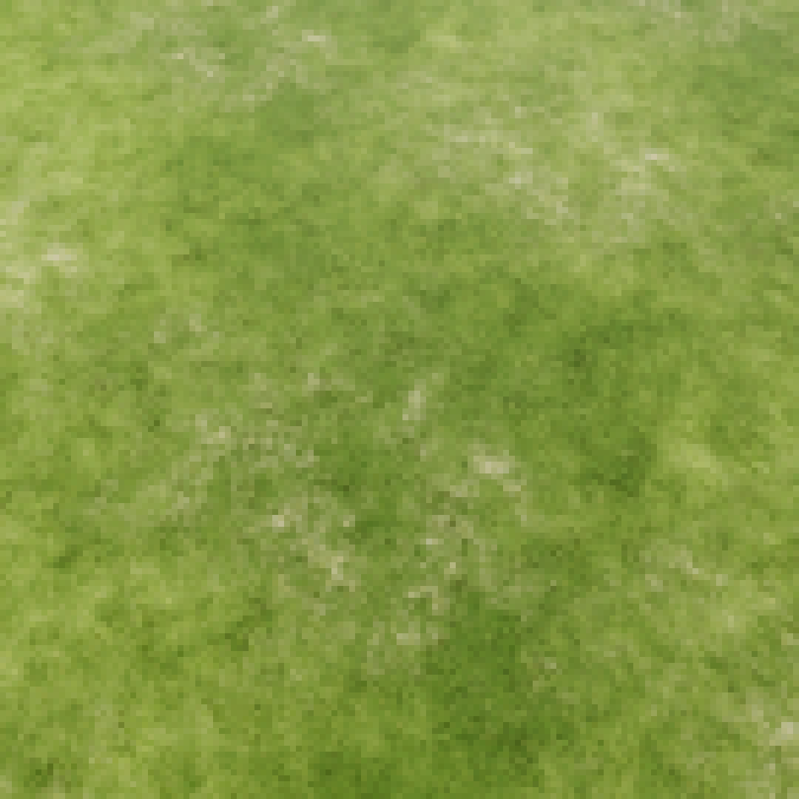

With the games I’ve made over the past six years I’ve always strived to create experiences that are new. I think that not being able to find enough games that I would want to play myself is one of the main reasons why I create, so that I can make the things that I wish already existed. I’ve always been inspired by media that can evoke strong emotions, and in games interactivity can be used to elevate this aspect by providing players the autonomy to make their own decisions and not just be a spectator. Being drawn towards fictional worlds that I could find myself getting lost in has also driven me to create. I think this reflects the way I perceive entertainment, as a form of escapism from a boring reality. I enjoy taking the lead on creative projects and ensuring progress over time. I’ve created games with like-minded people in the past, and have found myself taking on multiple roles including programming, game design, 2D and 3D art, audio, and project management. Sharing my own personal insights with others as a way to collaborate is something I find enjoyment in, since sharing ideas and solutions to problems plays a crucial role in anything creative. As a game developer, I think having experience in many areas gives me the necessary knowledge needed to function within a team and contribute in a variety of ways. Having an understanding of how something is made from ideation all the way to publishing is a critical skill for working in a team and understanding how important consistent progress, commitment, and effective communication is to ensure that projects are completed. I believe that my ability in being able to work both with a team and also by myself, filling many different roles demonstrates my breadth of experience and knowledge.
